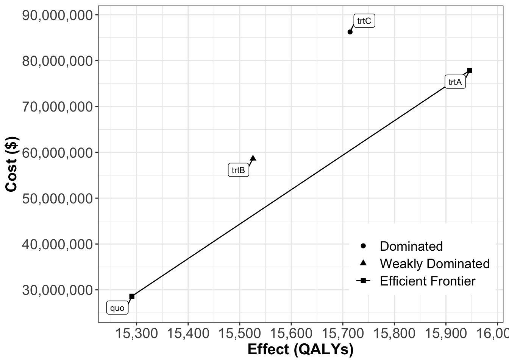

We are tasked to examine the economic value of new treatments for a rare type of cancer. The new treatments were designed to increase the health of patients in remission & to prevent them from relapsing back to either Stage 1 or Stage 2.
Before the new drugs development, the transition probabilities were the following:
Description
Probability
Probability of transition from Healthy to Stage 1
5%
Probability of transition from Healthy to Stage 2
2%
Probability of transition from Healthy to Stage 3
1%
Probability of transition from Stage 1 to Stage 2
10%
Probability of transition from Stage 1 to Remission
25%
Probability of transition from Stage 2 to Stage 1
5%
Probability of transition from Stage 2 to Stage 3
15%
Probability of transition from Stage 2 to Remission
20%
Probability of transition from Stage 3 to Stage 2
5%
Probability of transition from Stage 3 to Death
45%
Probability of transition from Remission to Stage 1
10%
Probability of transition from Remission to Stage 2
5%
Probability of transition from Remission to Stage 1 when on Treatment A
10%
Probability of transition from Remission to Stage 2 when on Treatment A
5%
Probability of transition from Remission to Stage 1 when on Treatment B
8%
Probability of transition from Remission to Stage 2 when on Treatment B
3%
Probability of transition from Remission to Stage 1 when on Treatment C
5%
Probability of transition from Remission to Stage 2 when on Treatment C
2%
Each health state is associated with the following utilities:
Description
Utility
Utility of Healthy per cycle
1
Utility of Stage 1 per cycle
0.88
Utility of Stage 2 per cycle
0.71
Utility of Stage 3 per cycle
0.36
Utility of Remission per cycle
0.95
Patients in certain health states have to take medications and visit their treating physician on a regular basis:
Description
Costs / Other
Number of visits per cycle in Stage 1
4
Number of visits per cycle in Stage 2
12
Number of visits per cycle in Stage 3
52
Number of visits per cycle in Remission
1
Cost of a visit
$ 100
Cost of treatment per cycle in Stage 1
$ 1,200
Cost of treatment per cycle in Stage 2
$ 6,000
Cost of treatment per cycle in Stage 3
$ 18,000
Cost of status quo per cycle in Remission
$ 400
Cost of Treatment A per cycle in Remission
$ 10,000
Cost of Treatment B per cycle in Remission
$ 7,500
Cost of Treatment C per cycle in Remission
$ 12,500
Assume an annual discount rate of 3% and a 30-year time horizon.
Note
What You Need to Prepare:
the Exercise excel file: we have the initial values for all the parameters and the procedures displayed in the excel formula.
the Function R file: it includes some advanced and long functions for the process. Lots of the functions are included in the dampack R package.
R Studio or R. – I highly recommende you to use R Studio
Step 1: Parameterize the Model
Here we use the excel to upload all the parameters provided in the excel.
Another ways is to define the parameters directly in the R.
With all the probabilities for transitions among all the stages, we’d like to build a transition probability matrix which would contribute to building Markov model traces later.
However, we might not have all the probabilities at the beginning. We also mention how to change rates into probabilities here.
If All Probabilities Known (No Rate-to-Probabilities Transitions)
Code
build_matrices <-function(params, mtype) { m_X =list()for (m in v_names_str){ m_X_ =matrix(0, nrow = v_n_states, ncol = v_n_states, dimnames =list(v_names_states,v_names_states))for (i inrownames(m_X_)) {for (j incolnames(m_X_)) {if (paste0(mtype,i,j) %in%names(params)) { m_X_[i,j] =as.numeric(params[paste0(mtype,i,j)]) } } }if (mtype =="p") {## if drawing the probabilities from the given parameters and building a probability matrixif (paste0("pRemissionStage1_",m) %in%names(params)) {## the relapse probs change over the strategies. A special rule here. m_X_["Remission","Stage1"] =as.numeric(params[paste0("pRemissionStage1_",m)]) m_X_["Remission","Stage2"] =as.numeric(params[paste0("pRemissionStage2_",m)]) }for (n in1:v_n_states) { m_X_[n,n] =1-sum(m_X_[n,]) } } else {## if drawing the rates from the given paramters and building a rate matrixif (paste0("hrRemissionStage1_",m) %in%names(params)) {## use the hazard ratios to adjust the relapse rates over the strategies. m_X_["Remission","Stage1"] = m_X_["Remission","Stage1"] *as.numeric(params[paste0("hrRemissionStage1_",m)]) m_X_["Remission","Stage2"] = m_X_["Remission","Stage2"] *as.numeric(params[paste0("hrRemissionStage2_",m)]) }for (n in1:v_n_states) { m_X_[n,n] =-sum(m_X_[n,]) } } m_X[[m]] = m_X_ } m_X}m_P =build_matrices(params_sc, "p")m_P
In the above formulas, r_* is a transition rate and \(\Delta t\) is the timestep, which in the Excel document is set to a value of 1 and stored in the variable n_cycle_length.
As we have got the costs and QALYs for every strategy, we calculate the ICERs for them and compared.
Code
## Compare different strategies with icers# Function also included in "Functions_markov.R"calculate_icers <-function(cost, effect, strategies) {# checks on input n_cost <-length(cost) n_eff <-length(effect) n_strat <-length(strategies)if (n_cost != n_eff | n_eff != n_strat) {stop("cost, effect, and strategies must all be vectors of the same length", call. =FALSE) }# coerce to character, in case they are provided as numeric char_strat <-as.character(strategies)# create data frame to hold data df <-data.frame("Strategy"= char_strat,"Cost"= cost,"Effect"= effect,stringsAsFactors =FALSE) nstrat <-nrow(df)# if only one strategy was provided, return df with NAs for incrementalif (nstrat ==1) { df[, c("ICER", "Inc_Cost", "Inc_Effect")] <-NAreturn(df) }# three statuses: dominated, extended dominated, and non-dominated d <-NULL# detect dominated strategies# dominated strategies have a higher cost and lower effect df <- df %>%arrange(.data$Cost, desc(.data$Effect))# iterate over strategies and detect (strongly) dominated strategies# those with higher cost and equal or lower effectfor (i in1:(nstrat -1)) { ith_effect <- df[i, "Effect"]for (j in (i +1):nstrat) { jth_effect <- df[j, "Effect"]if (jth_effect <= ith_effect) {# append dominated strategies to vector d <-c(d, df[j, "Strategy"]) } } }# detect weakly dominated strategies (extended dominance)# this needs to be repeated until there are no more ED strategies ed <-vector() continue <-TRUE# ensure that the loop is run at least oncewhile (continue) {# vector of all dominated strategies (strong or weak) dom <-union(d, ed)# strategies declared to be non-dominated at this point nd <-setdiff(strategies, dom)# compute icers for nd strategies nd_df <- df[df$Strategy %in% nd, ] %>%compute_icers()# number non-d n_non_d <-nrow(nd_df)# if only two strategies left, we're doneif (n_non_d <=2) {break }# strategy identifiers for non-d nd_strat <- nd_df$Strategy# now, go through non-d strategies and detect any# with higher ICER than following strategy## keep track of whether any ED strategies are picked up# if not, we're done - exit the loop new_ed <-0for (i in2:(n_non_d -1)) {if (nd_df[i, "ICER"] > nd_df[i +1, "ICER"]) { ed <-c(ed, nd_strat[i]) new_ed <- new_ed +1 } }if (new_ed ==0) { continue <-FALSE } }# recompute icers without weakly dominated strategies nd_df_icers <- nd_df[!(nd_df$Strategy %in% dom), ] %>%mutate(Status ="ND") %>%compute_icers()# dominated and weakly dominated d_df <- df[df$Strategy %in% d, ] %>%mutate(ICER =NA, Status ="D") ed_df <- df[df$Strategy %in% ed, ] %>%mutate(ICER =NA, Status ="ED")# when combining, sort so we have ref,ND,ED,D results <-bind_rows(d_df, ed_df, nd_df_icers) %>%arrange(desc(.data$Status), .data$Cost, desc(.data$Effect))# re-arrange columns results <- results %>%select(.data$Strategy, .data$Cost, .data$Effect, .data$Inc_Cost, .data$Inc_Effect, .data$ICER, .data$Status)# declare class of resultsclass(results) <-c("icers", "data.frame")return(results)}df_cea <-calculate_icers(cost = tot_ce$cost,effect = tot_ce$qaly,strategies = v_names_str)df_cea
Strategy Cost Effect Inc_Cost Inc_Effect ICER Status
quo quo 28610742 15291 NA NA NA ND
trtA trtA 77860260 15946 49249517 655 75174 ND
trtB trtB 58629019 15526 NA NA NA ED
trtC trtC 86249961 15714 NA NA NA D
Status
Descriptiion
D
Dominated
ND
Not Dominated
ED
Extended Dominated
Code
## display a table for CEA outputs# Function included in "Functions_markov.R"table_cea <-format_table_cea(df_cea) table_cea
Strategy Costs ($) QALYs Incremental Costs ($) Incremental QALYs
quo quo 28,610,742 15291 <NA> NA
trtA trtA 77,860,260 15946 49,249,517 655
trtB trtB 58,629,019 15526 <NA> NA
trtC trtC 86,249,961 15714 <NA> NA
ICER ($/QALY) Status
quo <NA> ND
trtA 75,174 ND
trtB <NA> ED
trtC <NA> D
Code
## CEA frontier -----# depends on the `ggplot2` and `ggrepel` packages.# Function included in "Functions_markov.R"plot(df_cea, label ="all", txtsize =16) +expand_limits(x =max(table_cea$QALYs) +0.1) +theme(legend.position =c(0.8, 0.2))

Step 7: One-way Sensitive Analysis
Use owsa() function in the dampack package to create the one-way sensitive analysis and tornado plot.